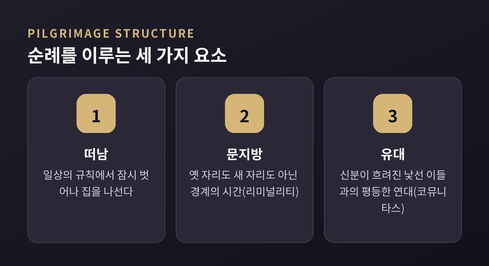
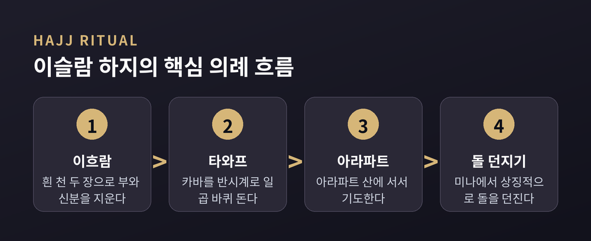
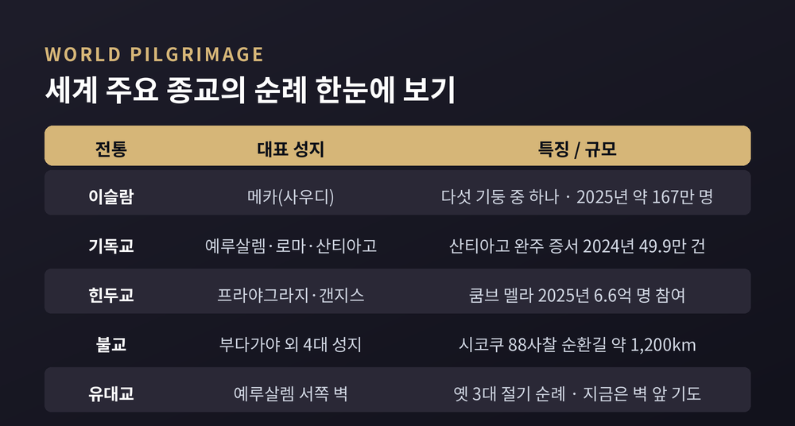
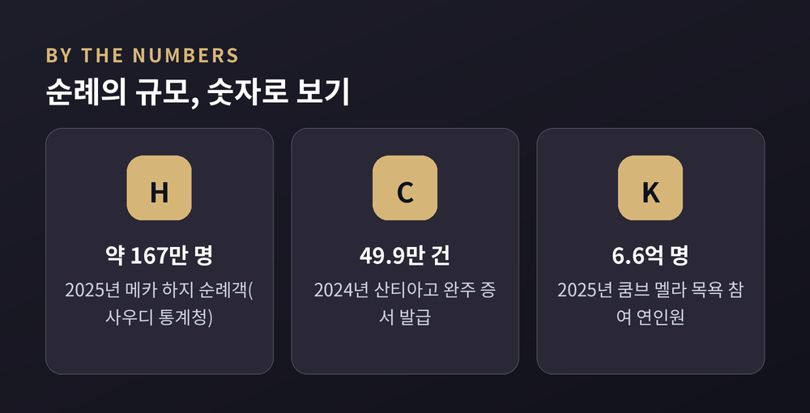

세계 종교 순례 전통, 왜 사람들은 성지로 먼 길을 떠날까
이번 글에서는 세계 종교의 순례 전통을 정리해 보겠습니다. 메카로, 산티아고로, 갠지스강으로. 사람들은 왜 굳이 먼 길을 걸어 성지로 향할까요.
특정 신앙을 옹호하거나 비판하지 않고, 비교종교의 눈으로 여러 전통을 나란히 놓고 보겠습니다.
순례란 무엇인가 — 인류학자 터너의 열쇳말 두 개
먼저 개념부터 짚겠습니다.
순례를 학문의 언어로 처음 또렷하게 설명한 사람은 영국 인류학자 빅터 터너입니다. 그는 두 개의 열쇳말을 남겼습니다. '리미널리티'와 '코뮤니타스'입니다.
리미널리티는 '문지방'을 뜻하는 라틴어에서 왔습니다. 옛 신분에서는 이미 벗어났지만, 새 신분에는 아직 들어서지 못한 중간 상태를 가리킵니다. 순례자는 집을 떠나는 순간 일상의 규칙에서 잠시 놓여납니다. 바로 이 문지방 위의 시간입니다.
코뮤니타스는 위계가 사라진 자리에 생기는 평등한 유대감입니다. 길 위에서는 지위도 재산도 흐려집니다. 낯선 이들이 같은 고생을 나누며 서로의 인간다움을 알아봅니다. 터너는 이 경험을 순례의 핵심으로 보았습니다.

이슬람의 하지 — 흰옷 두 장이 지우는 것
이슬람의 순례는 하지입니다.
하지는 이슬람의 다섯 기둥 가운데 다섯째입니다. 몸과 형편이 허락하는 무슬림이라면 일생에 한 번은 메카로 향해야 하는 의무입니다.
순례자는 '이흐람'이라는 흰 천 두 장을 두릅니다. 이 단순한 옷은 부와 신분과 국적의 표시를 지웁니다. 신 앞에서 모두가 평등하다는 상징입니다. 터너가 말한 코뮤니타스가 옷 한 벌로 구현되는 장면인 셈입니다.
메카에 다다른 순례자는 카바 신전을 시계 반대 방향으로 일곱 바퀴 돕니다. 타와프라 부릅니다. 아라파트 산에 서고, 사파와 마르와 두 언덕 사이를 오가고, 미나에서 돌을 던지는 의례가 이어집니다. 정해진 동작 하나하나에 오래된 이야기가 담겨 있습니다.

규모는 압도적입니다. 2025년 하지에는 약 167만 명이 메카에 모였습니다. 사우디 통계청 공식 발표 기준으로 1,673,230명입니다.
다만 순례가 늘 안온한 것은 아닙니다. 2024년에는 섭씨 50도를 넘는 폭염으로 최소 1,301명이 목숨을 잃었습니다. 성지로 가는 길에는 여전히 고난과 위험이 함께 놓여 있습니다.
기독교의 세 갈래 — 예루살렘, 로마, 그리고 산티아고
기독교의 순례는 한 곳으로 모이지 않습니다.
가장 오랜 초점은 예루살렘입니다. 예수의 죽음과 부활의 자리로 믿어지는 터에 세워진 성묘 교회가 중심입니다. 로마는 또 다른 축입니다. 2025년은 가톨릭의 '희년'이어서, 순례자들이 대성전의 성문을 지나는 발길이 이어졌습니다.
가장 널리 알려진 길은 산티아고입니다. 사도 야고보의 무덤이 있다고 전해지는 스페인 북서쪽으로 걸어가는 도보 순례입니다. 2024년 완주 증서를 받은 사람은 499,239명으로, 역대 최고를 기록했습니다.
흥미로운 대목이 있습니다. 2024년 처음으로 외국인 순례자가 스페인 사람을 앞질렀습니다. 전체의 58%였습니다. 증서를 신청하지 않은 이들까지 더하면 실제 순례객은 150만 명을 넘었으리라 추정합니다. 믿음으로 걷는 이도 있고, 자기를 마주하려 걷는 이도 있습니다. 길은 그 모두를 받아들입니다.

힌두교의 쿰브 멜라 — 지구에서 가장 큰 모임
규모만 놓고 보면, 이보다 큰 순례는 없습니다.
힌두교의 쿰브 멜라는 지구상 가장 큰 인간의 집회로 꼽힙니다. 프라야그라지, 하리드와르, 나시크, 우자인 네 성지를 천문의 배열에 따라 돌아가며 엽니다. 프라야그라지에서 12년마다 열리는 '마하 쿰브 멜라'가 그중 가장 큽니다.
순례자들은 갠지스강과 야무나강이 만나는 합류점에서 몸을 담급니다. 힌두 전통에서는 이 목욕이 죄를 씻고 해탈로 이끈다고 믿습니다.
2025년 프라야그라지의 마하 쿰브 멜라는 1월 13일부터 2월 26일까지 열렸습니다. 강에 몸을 담근 인원은 6억 6천만 명이 넘는 것으로 집계됐습니다. 2,700대의 CCTV와 인공지능 감시로 군중을 관리한, 역대 가장 기술적인 순례이기도 했습니다.

불교의 두 얼굴 — 네 성지와 1,200km의 길
불교의 순례는 부처의 생애를 따라갑니다.
전통적인 4대 성지가 있습니다. 룸비니는 탄생의 자리, 부다가야는 깨달음의 자리입니다. 사르나트는 첫 설법의 자리, 쿠시나가르는 열반의 자리입니다. 순례자는 태어남에서 사라짐까지 한 생애의 궤적을 발로 따라 밟는 셈입니다.
또 하나의 결이 다른 순례가 일본에 있습니다. 시코쿠 섬을 도는 88개 사찰 순례, '오헨로'입니다. 진언종을 연 승려 구카이, 곧 고보 대사의 발자취를 따라 88개 절을 잇습니다. 길이는 약 1,200km. 걸어서 돌면 하루 30km씩 여섯 주가 걸립니다. 한 성지를 향해 '가는' 순례가 있다면, 이렇게 '도는' 순례도 있습니다.
유대교의 예루살렘 — 사라진 성전과 남은 벽
유대교의 순례는 예루살렘으로 향했습니다.
'알리야 라레겔'은 '걸어서 올라감'을 뜻합니다. 유월절, 칠칠절, 초막절 세 절기에 성전으로 올라가는 오랜 전통입니다. 세 절기는 각각 보리·밀·과실의 수확기와 맞물렸습니다.
기원후 70년, 제2성전이 무너집니다. 국가적 규모의 의무 순례도 이때 끝납니다. 파괴에서 살아남은 서쪽 벽, 곧 '통곡의 벽'이 유대 역사의 연속성을 상징하는 자리로 남았습니다. 예전엔 성전으로 올라갔습니다. 지금은 그 성전이 섰던 언덕의 벽 앞에 섭니다.
그래서, 왜 떠나는가
이제 처음의 물음으로 돌아오겠습니다.
종교관광 연구는 순례의 동기를 여러 겹으로 나눕니다. 종교적 체험, 신앙의 확인, 일상으로부터의 탈출, 관광, 그리고 의미의 탐구입니다. 한 길 위에 독실한 순례자와 호기심 어린 여행자가 함께 걷습니다.
21세기의 연구자들이 특히 주목하는 동기는 '의미의 탐구'입니다. 순례는 깊고 오래 남는 자기 변형의 여정으로 이해됩니다. 믿음의 자리로 걸어가는 동안, 사람은 자기 안의 무언가와도 마주칩니다. 그래서 순례를 '신에게로 가는 길'이자 '자기에게로 가는 길'이라 부르기도 합니다.
한 가지는 짚어 두고 싶습니다. 순례가 늘 거룩하기만 한 것은 아닙니다. 상술과 혼잡, 사고와 갈등이 얽히기도 합니다. 그럼에도 사람들이 계속 길에 오르는 이유를, 종교학은 아직 한 문장으로 다 담지 못합니다.
전통은 저마다 다릅니다. 누구는 흰옷을 두르고, 누구는 강물에 몸을 담그고, 누구는 벽 앞에 섭니다. 그러나 '떠나서, 문지방을 건너, 낯선 이들과 나란히 선다'는 구조는 놀랍도록 닮아 있습니다.
정리하면 이렇습니다.
순례는 목적지에 관한 이야기 같지만, 실은 '길 위에서 달라지는 사람'에 관한 이야기입니다.
메카든 산티아고든 갠지스든, 사람들이 먼 길을 마다하지 않는 까닭을 하나로 압축한다면 이렇게 말하고 싶습니다. "성지로 가는 길은, 결국 자기 자신에게로 돌아오는 길이기도 하다."
당신이라면 어느 길에 서 보고 싶으신가요.